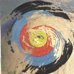

| Artist: | Brassé |
| Title: | Turbulence |
| Label: | LaBraD'or Records LBD 040008 |
| Length(s): | 58 minutes |
| Year(s) of release: | 2001 |
| Month of review: | [05/2001] |
| 1) | Storm (extro) | 0.30 |
| 3) | Sinful City | 7.06 |
| 4) | Trickster | 5.26 |
| 5) | Fairground Knight | 6.54 |
| 6) | Enter The New Romans | 2.12 |
| 7) | Do You Sleep At Night? | 2.44 |
| 8) | Song | 0.50 |
| 10) | Travellers | 4.15 |
| 12) | In My Blood | 4.02 |
Trickster opens with soft swirly keyboards, and then we come to some more tense repetitive runs on the keys. Bert Heinen is the vocalist on this mysterious sounding track, which takes some time getting underway and sounds ethereal and eerie. Some of the breaks do not sound quite natural, as for instance is the up-beat chorus. Later the vocals are doubled, and the guitar sound is more high-pitched.
With Fairground Knight, the keyboards, somewhat medieval sounding are quite distinctive and likable. In a way I am reminded of early Icehouse (tracks like Icehouse and Sons). The middle part is a bit more percussive, with keyboards fading in and out. In a way the music also has aspects of Egdon Heath, although the happy sounding keyboard run and synth strings are very distinctive and the way the vocalist lends more power to the song towards the end makes this a step up from the previous two tracks.
It seems the next two tracks together are called Greedmaster. The first of these parts then is Enter The New Romans which has some terrible handclapping. The keyboards add a dissonant note to it all. This is really a vocally weird track and I guess Brassé is trying to make a point here, but I can't say that I like the music. The next part is more likable, with some nice moody bass playing and keyboards.
A selection of short lovesongs then (On a prog record? you might ask). Well, yes. The first of these is Song, an a-capella song sung by Brassé. He does an acceptable job, but I do feel that for a song like this, a more encompassing voice is needed. Bonny Marlene opens with various samples being combined. Somewhat off-key sounding bagpipes (but don't they always?) this is an Scottish sounding low lament. The final love song is Travellers, back to the fifties here with acoustic guitar, a lullabyish track that gets pace along the way with ever stronger drums and something like a synth tin whistle. Then the "old sounding" vocals return and the song ends on a Dutch note.
The major track of the album is The Storm. Over twenty minutes long it opens with piano and oohs from the keyboards. The bass is slow and thoughtful and the piano tinkles along playfully. Then the song seems to combine the Riders On The Storm by Doors and Child In Time by deep Purple (but mostly the former). The same dark atmosphere and tension are apparent, but the piano playing really points to Doors. Round the five minute mark the guitar sets. Then the music almost drops out entirely, and you might have the feeling of having ended up in a psychedelic concert. Slowly, the music is building up again along with some broadcasts. Then the bottom drops out again, and we have to start over. The continuation with the female vocals of Leny Cranen is also remarkably similar to the build-up in Child In Time. Vocally, some of the melodies harken back to Sinful City. Then Brassé takes over the vocal part, strongly in the style of the bridge of Bowie's Let's Dance. On the whole a track that owes too much to others, or is this maybe a tribute? I can not imagine someone not spotting the ressemblances (like the drumming and guitar solo round the sixteen minute mark).
The final track is In My Blood. It is sung by Brassé, but first opens with beautiful dreamy keyboards. The vocal part does not change that much.